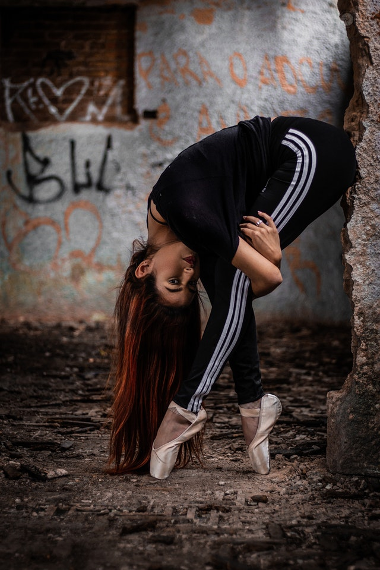

-Dansul energic este cea mai bună modalitate de a-ți menține silueta și în același timp de a se distra la maxim!
-Salsa, zumba, baletul, dansul de societate sunt doar cîteva dintre tipurile de dans care te ajută în modul corespunzător. În plus, sunt mult mai distractive în comparație cu orele de aerobic și îți oferă o mulțime de energie și emoții pozitive.
-Dansul clasic poate că nu se numără printre cele mai populare metode de a te menține în formă, dar asta nu înseamnă că baletul nu are beneficiile lui. Iată numai o parte dintre acestea, experimentate pe propria piele de o persoană care l-a practicat vreme de 14 ani.
